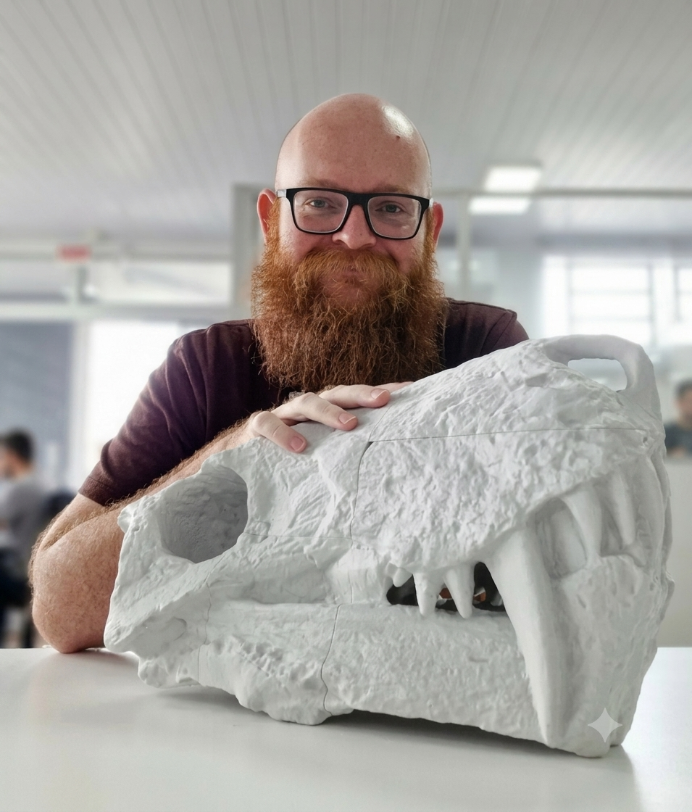

Professor · Pesquisador · Paleontólogo
Maurício
Rodrigo Schmitt
Universidade do Contestado — UNC
CENPALEO · PMPECSA
CENPALEO · PMPECSA
Pesquisador interessado em compreender o passado geológico e paleobiológico e em transformar ciência e conhecimento técnico em informações acessíveis à sociedade.